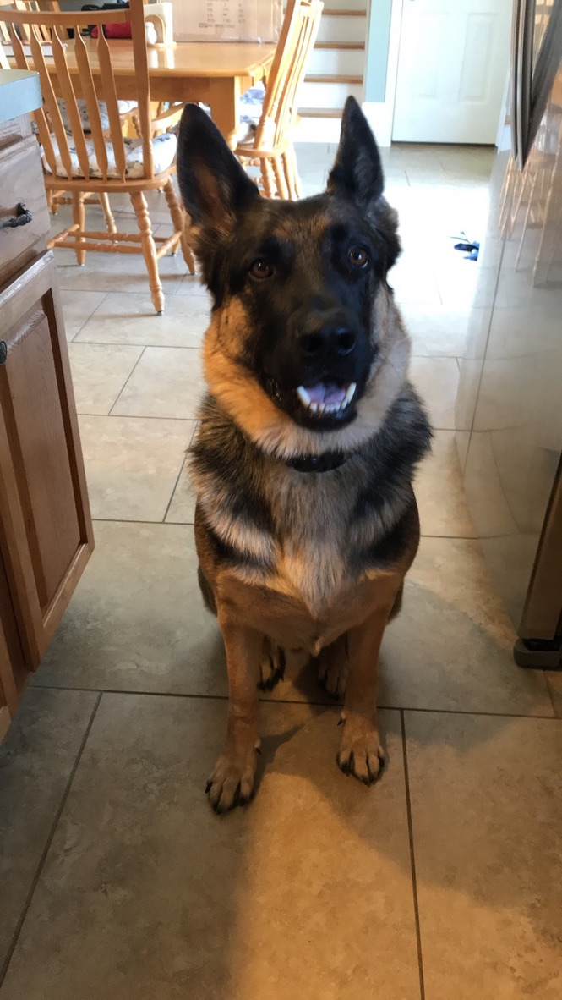
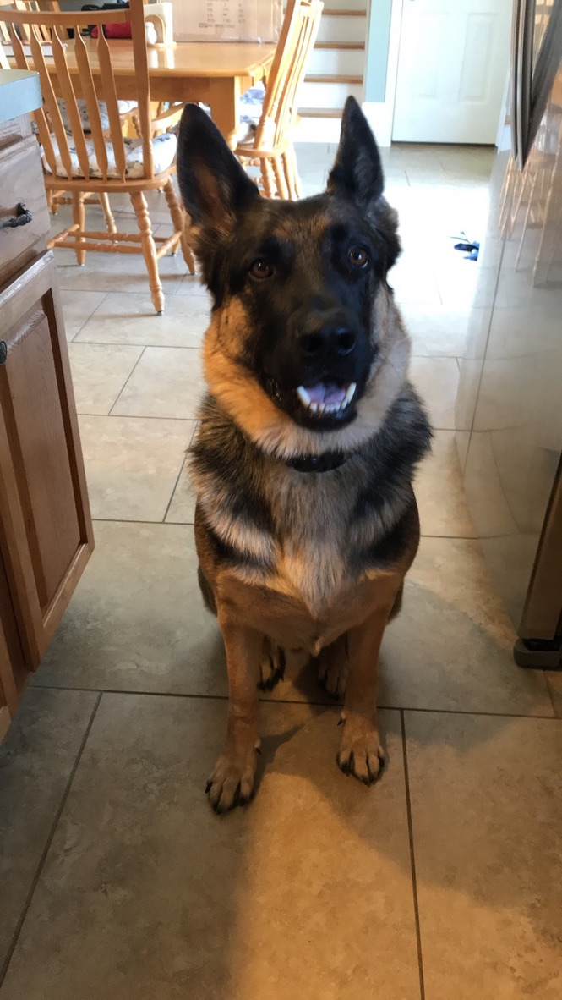
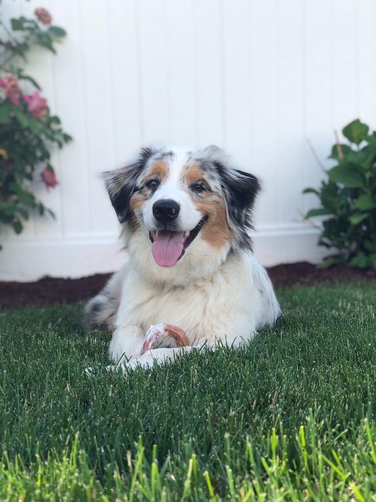
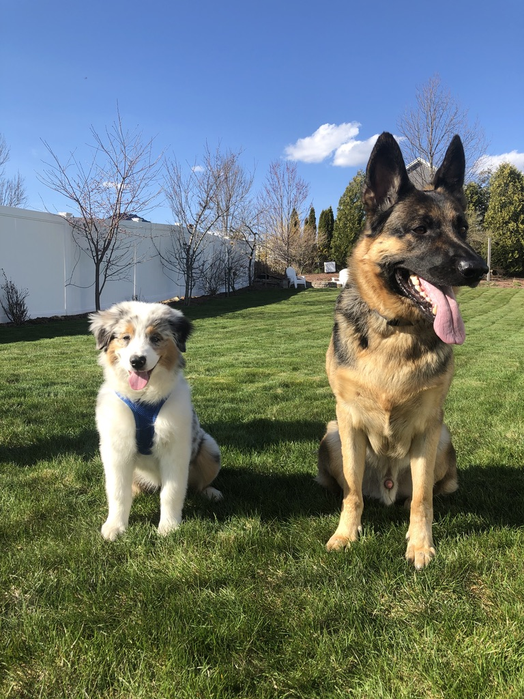

These are some pictures of me and my dogs Duke
(German Shepherd)and Denver (Australian Shepherd):
 



Why/How I got into computer science:
I have always been interested in computers and technology in general. I built my first pc in 7th grade which I feel sparked an interest for computers in general. I also took a Java course in high school and became familiar with linux on my own time. When it came time to choose a major for college I felt like computer science was the right choice.
My current experience and interests with computer science:
My current experience with computer science is good although it is a very hard major. Some advice that I would give to someone that wants to major in computer science is to stay on top of your work because you will fall behind very quickly if you don't. I figured this out the hard way.